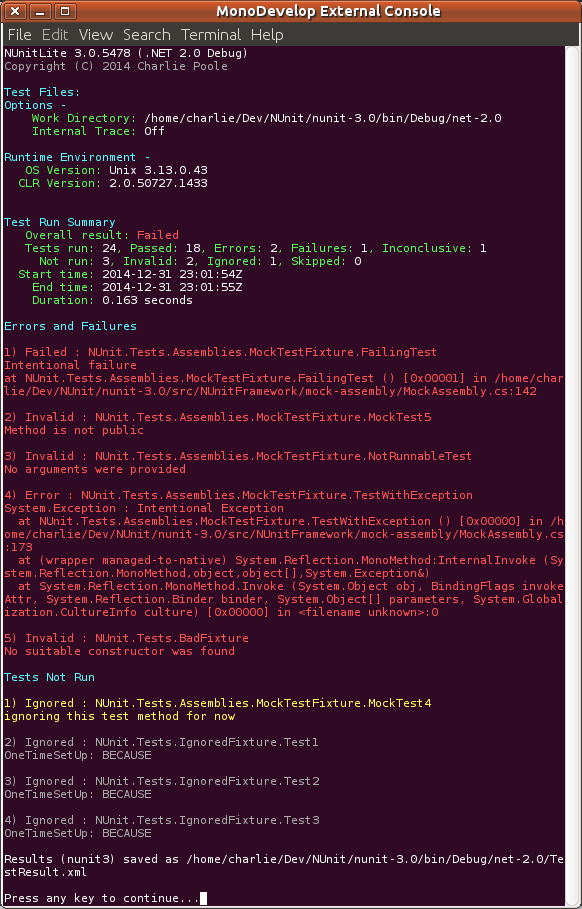

NUnitLite Runner
NUnitLite started out life as a separate version of the NUnit framework, with fewer features and a built-in test runner. It ran on devices as well as on desktop .NET and mono and allowed users to create executable tests without the overhead of a full NUnit installation.
With NUnit 3.0, the NUnitLite framework has been merged with the full NUnit framework. There is now only one framework, nunit.framework.dll. The built-in runner, which was a part of the old NUnitLite, is now packaged as nunitlite.dll.
Using NUnitLite
To run tests under NUnitLite, proceed as follows:
- Create a console application to use as your test assembly. If you have already placed tests in a dll, you can change the project so that it produces a console application and reload it.
- Make sure your test assembly references both nunit.framework and nunitlite.
- The Main() for your console application should look something like this...
public static void Main(string[] args) { new TextUI().Execute(args); } - Execute your test application in order to run the tests.
If you install the NUnitLite runner via the NuGet package, steps 2 and 3 are handled automatically. Both assemblies are installed and referenced and a file, Program.cs, is added to your project with a Main() like that above.
NUnitLite Output
As seen in the following screen shot, the output from an NUnitLite run is quite similar to that from the console runner. 